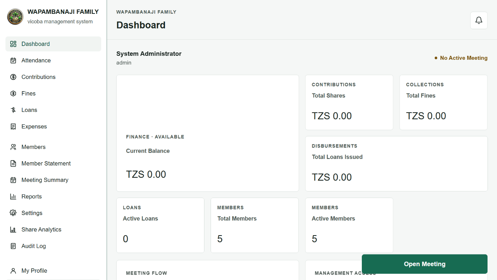

Software & Web · Case study
Wapambanaji VICOBA
Completed web app for managing Wapambanaji VICOBA operations, with an administrator dashboard for finance and member activities.
CompletedSoftware & Web

The objective
Bring core VICOBA group administration and financial activities together in a web-based management system.
My role
Built and completed the Wapambanaji VICOBA web application and its management dashboard.
Approach
Organized key operations in one dashboard, with sections for attendance, contributions, fines, loans, expenses, members, meeting summaries, reports, settings, and audit history.
Result
The completed application brings these management areas together in a single dashboard. The supplied screenshot shows the administrator view. The source repository is private and is not linked publicly.